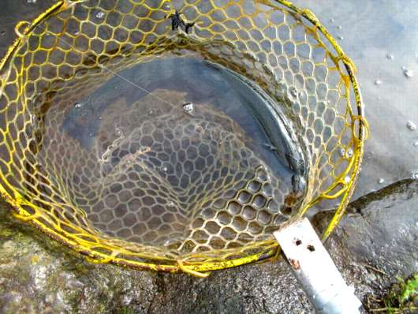
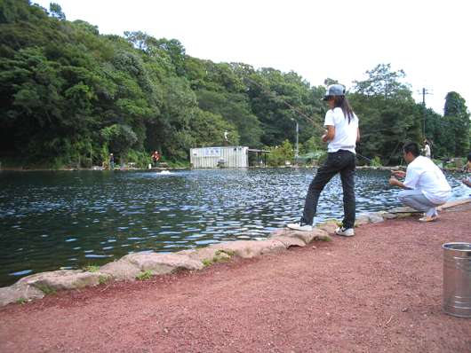

釣行日誌 故郷編
2007/09/27 久しぶりの管理釣り場
昨日の渓流釣りに続いて、久しぶりに管理釣り場へ行った。すそのフィッシングパークである。
国道から横道にそれてさらに看板に従って脇道に入り、駐車場に車を停めた。すぐ横に上池が見える。
「あれっ？ こんな小さな所でやるの？」
一目見た印象はこんな感じであった。それでも、道具を支度して池の畔に近づいてみて驚いた。あまりにも魚影が濃いのだ。特に小橋に近い池の隅には、50～60cm級の大物鱒たちがゆうゆうと定位している。これはこれは！と戦闘意欲をかき立てられて受付を済ます。背後に障害物の無い場所を選んでポジションを決め、近くにあった小さな椅子に腰掛ける。最近腰が痛くて長時間立っていられないのである。
ロッドにリールをセットし、さてどうやって釣ろうかと考えたが、一番無難なインジケーターのニンフで行くことにする。が、しかし、ベストのポケットにはティペットが４Ｘしか無いことに気づく。あの巨大鱒たちを相手に４Ｘではいささか心許ないが、しょうがない。で、肝心のニンフだが、97年頃にニュージーランド釣行の準備で巻きためて置いたウェイト入りのヘアーズイヤーがまだあったので、それを使うことにした。これだけ魚が居るのだから何でも喰うだろうという気もするし、スレにスレており、かなりシビアかも？ という気もする。フックのアイにティペットを結び、念入りに結び目をチェックして、いざ、最初の一投である。あまり遠投しても他の人の迷惑になるだけなので、目の前の沈み石の横辺りに静かにニンフを投げ入れる。水面に落ちたニンフが徐々に沈み、インジケーターが若干引き込まれた体勢で安定する。さあ、こい。
感じるほどの風はないが、水面のフライラインは徐々に動いてＳ字を描いてゆく。ラインの弛みができないように余った分だけを静かにリトリーブしてくる。オレンジ色のインジケーターが、ぴくんと動き、次の瞬間には水面下に消えていた。
「それっ！」
合わせは決まり、池の中央の深みのあたりからグネグネと鱒の動きが伝わってくる。素早く余分なラインをリールに巻き取り、ドラグを活かしてのリールのやりとりに持ち込む。あまりバカでかくはないが、元気のいい鱒である。しばし巻いては出され、巻いては出されを繰り返していると、ようやく近くに鱒が寄ってきた。手元に来てから左右に走られ、なかなかランディングに持ち込めない。それでもなんとか備え付けの大きなネットに鱒は収まった。きれいなレインボーである。

ようやく最初の１尾を釣り、なにかほっとした気分になる。それ以後は、順調にアタリが続き、コンスタントにファイトを楽しむ。どうやらヘアーズイヤーが当たったようだ。しかし問題は、細い４Ｘのティペットである。ここの鱒は本当にコンディションが良く、素晴らしく引くので、ちょっと大きなのが掛かるとあっけなく切れてしまう。また、鱒たちはそれなりにスレているらしく、近くで見ていると、口にしたフライを見事な早業で吐き出しているのがわかる。このため、スレ掛かりになってしまう割合も多く、その度に狭い池の中をバッキングまで出されてしまって往生してしまうのである。
そんなことを繰り返しているうちにお昼になり、買ってきたお弁当を食べながら、他の人達の釣りを見学する。隣のルアーのカップルは、朝から順調に釣り上げ続けている。管理棟横のフライの二人組は、いったいどんなフライを使っているのだろうと思わせるほどの爆釣である。

さて、おなかもいっぱいになり、それなりに数は釣ったので、今度はドライでやってみようと思い、これも昔巻いたCDCを使った白っぽいフライに替えてみた。インジケーターを取ったのでキャスティングが楽になり、気持ちよく伸びたライン、リーダー、ティペットが水面に浮かぶ。その先の白いフライは、いかにもおいしそうに水面を漂っている。ところが。フライの周囲に無数に居る鱒たちは、興味ありそうな顔をして近づいてくるのだが、あと数センチのところでプイッと横を向いてしまい、まるで無視なのである。これはフライが合っていないなぁと痛感させられるが、他にはあまりめぼしいフライの持ち合わせが無いのでこれで我慢して釣ることにする。
しかし。他の人達がどんどん釣っている間にも、私のCDCは無視され続け、空しく水面を漂うばかりである。そこで、安易にも再びインジケーターの釣りに戻り、イシグロで買ってきた黒のビーズヘッドマラブーを結んで沈めてみる。タナはヒトヒロ。すると、これがバカ当たりとなり、次々と釣れ出した。あまりアクションを加えなくても、フライが沈んでインジケーターが半沈みになった頃には当たりが出る。あとは合わせとファイトの繰り返しである。水温は15度を少し上回ったあたりであったが、魚の活性は高く、存分に力強いすそのの鱒のファイトを味わった。最後に釣った１尾は、スレではなかったにもかかわらずバッキングまでラインを出して大いにファイトして楽しませてくれた。
今日は、ちょっとした遠征であったが噂に聞いていたすそのの鱒の力強さを十分に味わうことができた一日であった。また来てみたい気にさせる良い管理釣り場であった。
釣行日誌 故郷編 目次へ
サイトマップ
ホームへ
お問い合わせ